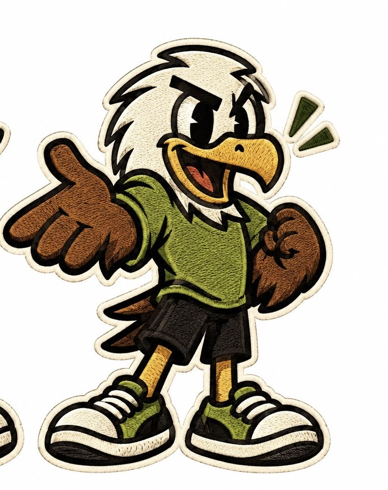

[Data do culto]
[Nome ou tema do culto]
Adicione aqui um resumo do encontro e registros fotográficos.
Adolescentes de 15 a 17 anos.
Uma fase de identidade, amizade, fé e descobertas, com uma linguagem jovem e autêntica.
Este espaço é reservado para apresentar a visão, os objetivos, a liderança e as características desta divisão.

Adicione fotos reais, legendas, datas e descrições dos encontros desta divisão.
Cadastre os cultos que já aconteceram, com data, tema, descrição e fotos.
Adicione aqui um resumo do encontro e registros fotográficos.
Adicione aqui um resumo do encontro e registros fotográficos.
Apresente iniciativas, ações, estudos, encontros e projetos especiais.
Descrição, objetivo e informações do projeto.
Descrição, objetivo e informações do projeto.
Adicione marcos importantes da divisão em ordem cronológica, com datas, textos e imagens.
Os campos abaixo ficam reservados para as informações oficiais que serão fornecidas pela liderança.